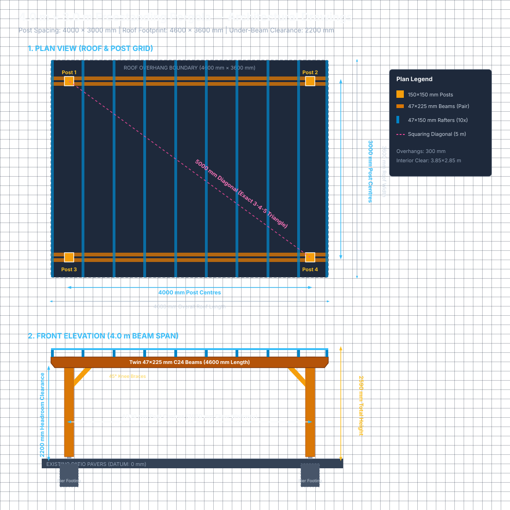

🌲 4.0 m × 3.0 m Freestanding Pergola
Complete Master Construction Handbook & Architectural Specifications
Author: John Tobin & Antigravity Pair Programming | Location: Ireland/UK Patio Build
4.0 m × 3.0 m Freestanding Timber Pergola Master Plan

A comprehensive, carpentry-grade design and construction package for a 4.0 m × 3.0 m freestanding garden pergola built over an existing stone/brick paved patio.
🌲 Design Summary
| Feature | Specification |
|---|---|
| Structure Type | Freestanding, self-supporting on 4 corner posts |
| Post Spacing | 4000 mm × 3000 mm (centre-to-centre) — full 4×3 m usable patio area |
| Roof Footprint | 4600 mm × 3600 mm (incorporating 300 mm decorative overhangs on all sides) |
| Headroom Clearance | 2200 mm (~7 ft 3 in) under lowest support beams |
| Overall Structure Height | ~2595 mm (~8 ft 6 in) to top of purlins |
| Foundation & Anchoring | Concrete pier footings (~450–600 mm deep) poured beneath lifted pavers; heavy-duty elevated standoff post bases (+35 mm water clearance); pavers precision-cut and reinstated for a seamless patio finish |
| Timber Specification | Smooth planed (PAR / Eased-Edge) pressure-treated softwood, structural grade C24 |
| Corner Posts | 150 mm × 150 mm (nominal 6×6) solid timber with notched shoulders |
| Main Support Beams | Twin sandwich beams along 4.0 m span: 47 mm × 225 mm (2×9) C24, 4600 mm length |
| Rafters (Crossbeams) | 47 mm × 150 mm (2×6) C24, 3600 mm length, spaced ~510 mm centres, notched with 25 mm birdsmouth seats |
| Top Purlins (Shade Battens) | 38 mm × 50 mm, 4600 mm length, spaced ~360 mm centres (~45% dappled shade) |
| Lateral Bracing | 8 × 45° timber knee braces (500 mm leg length) connecting posts to beams and rafters |
| Tail Detailing | Clean modern 45° angled chamfer cuts on all beam and rafter overhangs |
| Main Fasteners | Hot-dip galvanised / stainless M12 carriage/coach bolts through notched post joints (torqued with hand ratchet); exterior structural screws for rafters and braces |
| Finishing | All cut ends treated with end-grain preserver; coated with exterior UV wood oil (e.g. Osmo / Sadolin) |
| Lighting | Warm white festoon string lights suspended from stainless screw eye hooks |
📐 Exact Dimensional Grid & Geometry
◄────────────────── Total Roof Length: 4600 mm ──────────────────►
Overhang Overhang
300 mm ◄────── Post Centres: 4000 mm ──────► 300 mm
┌─────────┬───────────────────────────────────────────────┬─────────┐
│ │ [Post 1] [Post 2] │ │
▲ │ │ 150x150 150x150 │ │
│ │ └───────────────────────────────────────────────┘ │
│ │ │
Total │ │ │
Roof │ │ ◄─── Usable Interior Patio Clearance: 3850 x 2850 mm ───► │
Depth: │ │ │
3600 mm│ │ │
│ │ │
│ │ ┌───────────────────────────────────────────────┐ │
▼ │ │ [Post 3] [Post 4] │ │
│ │ 150x150 150x150 │ │
└─────────┴───────────────────────────────────────────────┴─────────┘
▲ ▲
│◄───────────── Post Centres: 3000 mm ─────────►│
Perfect 3-4-5 Triangle for On-Site Squaring: The post centres form a classic right triangle: 3.0 m × 4.0 m × 5.0 m diagonal (√(3² + 4²) = 5.0 m). When laying out string lines, measuring exactly 5000 mm diagonally between opposite post centres guarantees a 100% square layout without complex math!
📚 Document Index
- 01_PROJECT_SPECIFICATIONS.md — Structural design calculations, elevations, height budgets, and building regulation notes.
- 02_BILL_OF_MATERIALS.md — Comprehensive shopping list of timber, post shoes, concrete, fasteners, and treatments.
- 03_CUT_LIST_AND_TIMBER_OPTIMIZATION.md — Dimensioned cut list with stock nesting to minimise timber wastage from standard lumber lengths (4.8 m, 3.6 m, 2.4 m).
- 04_JOINERY_AND_CONNECTION_DETAILS.md — Technical joinery diagrams for post shoulder notching, birdsmouth cuts, 45° chamfer tails, and bolt patterns.
- 05_STEP_BY_STEP_BUILD_GUIDE.md — Phased construction manual from patio paver lifting and concrete pier pouring to timber assembly and finishing.
- 06_TOOL_AND_SAFETY_CHECKLIST.md — Tool recommendations tailored to your Bosch GSR 12V-35 FC drill/driver, router, and mitre saw, plus safety gear.
- diagrams/ — Architectural scale SVG schematics of elevations, plans, and joinery.
01 — Project Specifications & Structural Engineering
This document establishes the structural parameters, dimensional constraints, and engineering considerations for the 4.0 m × 3.0 m freestanding timber pergola.
1. Dimensional Summary
1.1 Plan View Geometry
- Post-to-Post Spacing (Centre-to-Centre):
- Long direction (Beam run): 4000 mm (4.00 m)
- Short direction (Rafter run): 3000 mm (3.00 m)
- Diagonal (Corner-to-Corner check): 5000 mm (5.00 m) (Exact 3-4-5 right triangle)
- Post Outside-to-Outside Dimensions:
- Long dimension: 4000 mm + 150 mm = 4150 mm
- Short dimension: 3000 mm + 150 mm = 3150 mm
- Usable Interior Clearance (Inside Face to Inside Face of Posts):
- Long opening: 4000 mm − 150 mm = 3850 mm
- Short opening: 3000 mm − 150 mm = 2850 mm
- Cantilever Overhangs:
- Beams: 300 mm overhang beyond post centre on each end
- Rafters: 300 mm overhang beyond beam centreline on each end
- Overall Roof Footprint:
- Length: 4000 mm + (2 × 300 mm) = 4600 mm
- Width: 3000 mm + (2 × 300 mm) = 3600 mm
- Covered area: 4.6 m × 3.6 m = 16.56 m²
2. Vertical Elevations & Height Budget
Every vertical elevation is calibrated from the finished patio paver level (0 mm datum):
| Component | Elevation / Dimension | Cumulative Top Elevation |
|---|---|---|
| Finished Patio Level | Datum (0 mm) | 0 mm |
| Standoff Post Base Clearance | +35 mm air gap | +35 mm |
| Clearance Under Main Beams | 2200 mm (~7 ft 2.5 in) | +2200 mm (Headroom) |
| Post Shoulder Cut Height | Timber height: 2200 − 35 = 2165 mm | +2200 mm |
| Main Support Beams (47×225 mm) | Depth: 225 mm | +2425 mm |
| Post Total Top Height (Tongue) | Timber height: 2165 + 225 = 2390 mm | +2425 mm (flush with beams) |
| Rafter Birdsmouth Seat | Depth of notch: 25 mm into rafter | — |
| Rafter (47×150 mm) Effective Rise | 150 mm − 25 mm = +125 mm | +2550 mm |
| Top Purlins (38×50 mm laid flat) | Thickness: +38 mm | +2588 mm (~2.59 m) |
▲ +2588 mm ──────────────────────────────────────────────── Top of Purlins (38 mm)
│
│ +2550 mm ════════════════════════════════════════════════ Top of Rafters (150 mm)
│ [ 25 mm birdsmouth notch locks over beam ]
│ +2425 mm ▓▓▓▓▓▓▓▓▓▓▓▓▓▓▓▓▓▓▓▓▓▓▓▓▓▓▓▓▓▓▓▓▓▓▓▓▓▓▓▓▓▓▓▓▓▓▓▓▓ Top of Beams & Post Tongue
│ │ 47x225 mm Sandwich Beams │
│ +2200 mm ──────────────────────────────────────────────── Underside of Beams (Clearance)
│ │ │
│ │ │
│ │ 150x150 mm C24 Post │ Headroom: 2.20 m (~7 ft 3 in)
│ │ │
│ │ │
│ +35 mm ──────────────────────────────────────────────── Bottom of Timber Post
│ [ Galvanised Elevated Standoff Base ] Air gap for water drainage
▼ 0 mm ════════════════════════════════════════════════ Finished Patio Pavers
2.1 Accommodating Patio Slope (Fall) & Level Datum
Standard exterior patios are built with an intentional drainage slope (typically a 1:60 to 1:80 fall away from the house), resulting in a 25 mm to 60 mm+ vertical drop across a 4.0 m or 3.0 m footprint.
The pergola superstructure (beams, rafter birdsmouth seats, and purlins) must be dead level. How the patio slope is resolved depends on the post base hardware:
- With Option 2 (Simpson Strong-Tie APB100/150): The M20/M24 threaded standoff rod provides 50 mm of vertical adjustment (100–150 mm). The collars on lower corners are simply adjusted upward so all four post bearing plates sit at the identical horizontal datum plane. All four posts are cut to the standard 2390 mm length.
- With Option 1 (Fixed Box Shoes): Shoes are anchored flush with the patio pavers (with local shimming to ensure base plates are flat and posts stand plumb). The patio slope is compensated by cutting each post to a custom length (2390 mm + corner drop relative to the highest corner). The 2.7 m (2700 mm) purchased post stock provides ample surplus length.
3. Structural Engineering & Timber Calculations
3.1 Timber Grade: C24 Softwood
- Bending Strength (f_m,k): 24 N/mm² (vs 16 N/mm² for C16).
- Modulus of Elasticity (E_0,mean): 11.0 kN/mm² (denser, 35% stiffer than C16).
- Density: ~420 kg/m³ (tighter growth rings, minimal knots, straighter grain).
- Treatment: High-pressure copper azole preservative (Use Class 3 external above-ground), kiln-dried to <20% moisture before profiling to planed-all-round (PAR) eased-edge.
3.2 Main Support Beam Sizing (4.0 m Span)
- Each side uses a twin beam (sandwich assembly) of two 47 mm × 225 mm C24 members flanking the notched post.
- Total combined beam width: 47 mm × 2 = 94 mm.
- Effective Span with Knee Braces:
- 45° knee braces extend 500 mm horizontally from each post.
- Clear beam span: 3850 mm.
- Effective unsupported span between brace points: 3850 − (2 × 500) = 2850 mm (2.85 m).
- Deflection Check:
- For open rafters + purlins (dead load ~0.20 kN/m² + temporary snow load 0.60 kN/m²), total load per 4m beam is ~3.5 kN uniformly distributed.
- Maximum calculated deflection δ_max < 3.2 mm, which is well inside the strict British/Irish architectural limit of L / 360 = 2850 / 360 ≈ 7.9 mm.
- Result: Zero perceptible sag, exceptionally rigid.
3.3 Rafter Sizing (3.0 m Span)
- Rafters: 47 mm × 150 mm C24 spanning 3.0 m between front and back beams.
- Number of rafters: 10 rafters total across the 4.6 m length (spaced at ~510 mm centres).
- Maximum rafter span is 3000 mm, reduced to 2000 mm by diagonal knee braces at the end bays.
- Rafter capacity far exceeds requirements for open pergola purlin loads.
3.4 Racking & Wind Stability (Triangulation)
- Freestanding outdoor pergolas are exposed to cyclic lateral wind pressure.
- Primary Anti-Racking Mechanism:
- Eight 45° solid timber knee braces (500 mm × 500 mm leg triangle).
- 4 braces along the 4.0 m beam axis + 4 braces along the 3.0 m rafter axis.
- This triangulation prevents the rectangular frame from shearing into a parallelogram.
- Secondary Anti-Racking Mechanism:
- 25 mm birdsmouth notches cut into all 10 rafters lock the roof horizontally against the 150 mm wide beam assemblies, preventing any twisting or racking of the upper roof plane.
3.5 Component Weight Breakdown & Manual Handling
Timber weights are calculated using standard C24 structural softwood density (~420 kg/m³ dry, rising to ~500–550 kg/m³ when freshly pressure-treated and retaining moisture):
| Component | Quantity | Finished Dimensions | Net Volume (Each) | Dry Weight (~420 kg/m³) | Treated/Moist Weight (~500–550 kg/m³) |
|---|---|---|---|---|---|
| Corner Post (T-01) | 4 | 150 × 150 mm × 2390 mm (net of shoulder notches) | 0.0506 m³ | ~21.3 kg (47 lbs) | ~25.3 – 27.8 kg (56–61 lbs) |
| Main Support Beam (T-02) | 4 | 47 × 225 mm × 4600 mm (net of 45° chamfers) | 0.0484 m³ | ~20.3 kg (45 lbs) | ~24.2 – 26.6 kg (53–59 lbs) |
| Rafter (T-03) | 10 | 47 × 150 mm × 3600 mm (net of birdsmouth cuts) | 0.0248 m³ | ~10.4 kg (23 lbs) | ~12.4 – 13.6 kg (27–30 lbs) |
| Top Purlin (T-04) | 10 | 38 × 50 mm × 4600 mm | 0.0087 m³ | ~3.7 kg (8 lbs) | ~4.4 – 4.8 kg (10–11 lbs) |
| Knee Brace (T-05) | 8 | 100 × 100 mm × ~735 mm (mitred blank) | 0.0074 m³ | ~3.1 kg (7 lbs) | ~3.7 – 4.1 kg (8–9 lbs) |
- Heaviest Single Component: The 150 × 150 mm Corner Post is the heaviest single timber element in the structure (~21.3 kg dry / ~25–28 kg treated). The raw 2.7 m uncut blank as delivered from the merchant weighs ~25.5 kg dry (~30–33 kg treated).
- Handling Leverage: The 47 × 225 mm Main Support Beams are a very close second in mass (~20.3 kg dry / ~24–27 kg treated each), but due to their 4.6 m length, they present the highest leverage and awkwardness during overhead lifting. Each assembled twin-beam pair represents ~41 kg of timber across the post tongue.
- Total Timber Dead Load: The complete timber superstructure totals ~330 kg dry (~390–430 kg if freshly pressure-treated).
4. Foundation & Groundworks Engineering
4.1 Wind Overturning & Uplift
- Although open rafters have low aerodynamic profile compared to a solid roof, high gusts (e.g. 80–100 km/h Irish winter storms) exert significant uplift and overturning moments on the 2.6 m high posts.
- Surface-anchoring into 30–50 mm patio pavers laid on loose sand will fail under lateral wind loads.
- Therefore, each post is anchored into a mass-concrete pier foundation excavated through the patio sub-base.
4.2 Concrete Pier Sizing
- Hole Dimensions: 300 mm × 300 mm square (or 300 mm diameter round) × 500 mm deep below patio paver level.
- Concrete Volume per Pier: ≈ 0.045 m³ (≈ 100 kg of cured concrete per post, providing 400 kg total ballast weight anchoring the structure down).
- Concrete Specification: Rapid-setting Postcrete (2.5 bags per hole) or standard C25/30 mix (1 part cement, 2 parts sharp sand, 3 parts 20 mm gravel).
- Elevation of Pier Top: Poured to finish ~30–40 mm below the top paver level (flush with the bedding sand), allowing the lifted patio paver to be notched/cut and re-bedded around the post shoe for an unbroken patio appearance.
4.3 Post Base Anchorage & Moisture Isolation Options
To attach the 150 mm × 150 mm timber posts securely to the concrete piers while preventing end-grain moisture rot, two approved hardware options may be used:
- Option 1: 150 mm Heavy-Duty Galvanised Bolt-Down Shoe (Box Collar — Recommended):
- Heavy-duty square steel collar (e.g. Securall Fastenings / Huws Gray).
- Fastened to the concrete pier using four M12 × 100 mm or 120 mm through-bolts.
- A 5 mm drainage spacer/shim is placed under the post inside the shoe, keeping the cut timber end-grain elevated above water that enters the shoe.
- Option 2: Simpson Strong-Tie APB100/150 (Adjustable Elevated Standoff Base):
- Heavy-duty bracket with an M20/M24 threaded riser providing 100–150 mm of adjustable elevation above the concrete.
- Completely separates the timber post from the ground, providing total isolation from standing water and allowing precision height leveling.
5. Planning Permission & Building Regulations
- Ireland (Planning and Development Regulations — Class 3 Exempted Development):
- Freestanding pergolas and garden structures for domestic recreation situated
to the rear of the house are exempt from planning permission provided:
- The structure is located in the rear garden (not in front of the house building line).
- Total area of all garden structures does not reduce remaining private open garden space below 25 m². (Our covered area is 16.5 m²).
- Height does not exceed 3.0 m (our total height is 2.59 m).
- Freestanding pergolas and garden structures for domestic recreation situated
to the rear of the house are exempt from planning permission provided:
- United Kingdom (Permitted Development — Class E):
- If within 2.0 m of a boundary fence/wall, the maximum permitted height for a flat roof / pergola is 2.5 m. Because this build has a total height of ~2.59 m, ensure the posts/overhangs are positioned at least 2.0 m away from boundary fences, or consult your local planning authority if located closer.
02 — Bill of Materials (BOM) & Shopping List
This document lists every piece of timber, hardware, concrete, fastener, and treatment required to build the 4.0 m × 3.0 m freestanding pergola. All items are specified using standard off-the-shelf commercial stock available at Irish and UK builders merchants (e.g. Chadwicks, Goodwins, Brooks, B&Q, Wickes, Travis Perkins).
1. Timber Materials
Specify C24 structural grade, Smooth Planed All Round (PAR / Eased-Edge), pressure-treated (tanalised) softwood. Kiln-dried treated timber is straighter, lighter, and ready to oil.
| Item | Component | Finished Cross-Section | Commercial Stock Length to Order | Quantity | Approx. Unit Weight (Treated) | Notes / Purpose |
|---|---|---|---|---|---|---|
| T-01 | Corner Posts | 150 mm × 150 mm (6″ × 6″) | 2.7 m (or 3.0 m) | 4 lengths | ~30–33 kg stock (~25–28 kg finished) | Cut to 2390 mm; heaviest single timber element |
| T-02 | Main Support Beams | 47 mm × 225 mm (2″ × 9″) | 4.8 m | 4 lengths | ~25–28 kg stock (~24–27 kg finished) | Cut to 4600 mm; 2 front beam boards, 2 back |
| T-03 | Rafters (Crossbeams) | 47 mm × 150 mm (2″ × 6″) | 3.6 m | 10 lengths | ~13–15 kg stock (~12–14 kg finished) | Exact 3600 mm finished length (zero waste!) |
| T-04 | Top Purlins (Battens) | 38 mm × 50 mm (or 47×50 mm) | 4.8 m | 10 lengths | ~4.5–5.5 kg stock (~4.4–4.8 kg finished) | Cut to 4600 mm; laid flat on rafters |
| T-05 | Corner Knee Braces | 100 mm × 100 mm (4″ × 4″) | 2.4 m | 2 lengths | ~12–14 kg stock (~3.7–4.1 kg per brace) | Cut into eight 45° diagonal struts (~750 mm) |
| T-06 | Temporary Bracing | 38 mm × 75 mm (or 25×50 mm) | 3.0 m | 4 lengths | ~4–5 kg each | Budget rough timber for bracing posts during erection |
2. Concrete, Groundworks & Post Anchors
| Item | Component | Specification | Quantity | Notes |
|---|---|---|---|---|
| G-01A | Option 1: 150 mm Bolt-Down Post Shoe (Recommended) | Heavy-duty hot-dip galvanised 150 mm × 150 mm (6″ × 6″) square bolt-down post shoe (e.g. Securall Fastenings, Clarkes of Cavan, Timbertrove) | 4 units | Easiest installation; rigid box collar self-aligns post; use with 5 mm drainage shim |
| G-01B | Option 2: Adjustable Elevated Post Base (Architectural) | Simpson Strong-Tie APB100/150 adjustable post base with threaded M20/M24 standoff rod (e.g. Fastbuild Supplies, Metro Fixings, TC Fixings) | 4 units | 100–150 mm adjustable height clearance; complete isolation from ground moisture |
| G-02 | Concrete Pier Foundation | Postcrete (Rapid Set Concrete) 20 kg bags (e.g. Blue Circle / Kilsaran / Hanson) | 10 bags | 2.5 bags per 300×300×500 mm hole. Fast 15-minute set |
| G-03 | Foundation Anchors | M12 × 100 mm (or 120 mm) Through-Bolts / Wedge Anchors (Hot-Dip Galvanised or A4 Stainless Steel, e.g. Rawlplug / ForgeFix from Screwfix / Toolstation) | 4–8 units | Anchors base plate into cured concrete pier (1 to 4 per post depending on base) |
| G-04 | Paver Bedding Sand | Kiln-dried paving sand / sharp sand | 1 bag (25 kg) | For re-bedding cut pavers around post collars |
2.1 Post Base Buying Guide & Supplier Links
-
Option 1: 150 mm Heavy-Duty Galvanised Bolt-Down Post Shoe (Box Collar — Easiest / Most Rigid)
- Securall Fastenings (Ireland) — 150x150 Base Plate Post Anchor Supports (Hot-dipped galvanised heavy steel bracket with bolt clamp; Sandyford, Dublin & nationwide delivery across Ireland).
- Securall Fastenings (Ireland) — 150mm (6 Inch) Hot Dipped Galvanised Fence Shoe Support (Alternative bolt-grip shoe with drainage holes).
- Clarkes of Cavan (Ireland) — 150mm Galvanised Bolt Down Post Support (Heavy-duty hot-dip galvanised post support for decking & pergolas).
- Timbertrove (Ireland) — Bolt Down Post Support Shoe (150mm / 6x6") (Irish timber merchant; Dublin collection & nationwide delivery).
- Fastening: Secure base plate to concrete with M12 through-bolts; fix post through side collar holes using M8 coach screws or heavy structural timber screws. Place a 5 mm composite shim or stainless washer under the post end-grain inside the shoe for drainage.
-
Option 2: Simpson Strong-Tie APB100/150 (Adjustable Elevated Standoff Base — Architectural)
- Simpson Strong-Tie APB100/150 Official Technical Specification (Official manufacturer product sheet, dimensional drawings, load tables, and installation instructions).
- Fastbuild Supplies — Simpson Strong-Tie APB100/150 Adjustable Post Base.
- Metro Fixings — Simpson Strong-Tie APB100/150 Post Base (100mm–150mm).
- TC Fixings — Simpson Strong-Tie APB100/150 Adjustable Post Base.
- F.H. Brundle — Simpson Strong-Tie APB100/150 Elevated Adjustable Post Base.
- Fastening: Bolt bottom plate to concrete using M12/M16 anchor; screw top plate to post underside with structural screws. Rotate threaded collar to adjust post height (100–150 mm) for millimeter-perfect leveling across all 4 footings.
-
Concrete Anchors & Post Screws:
- Screwfix Ireland — M12 Through-Bolts (Wedge Anchors) (For anchoring post base plate into cured concrete piers).
- Toolstation — M12 Through-Bolts / Anchor Bolts (Alternative supplier for M12 masonry through-bolts).
- Screwfix Ireland — M8 Coach Screws (For securing post sides into shoe collar flanges).
3. Structural Fasteners & Hardware Schedule
| Item | Fastener Type | Specification & Dimensions | Quantity | Where Used |
|---|---|---|---|---|
| F-01 | M12 Carriage / Coach Bolts | M12 × 160 mm Hot-Dip Galvanised (or A2 Stainless Steel) with round dome head and square neck | 16 bolts | Through-bolting the two 47 mm beams through the 56 mm post tongue (4 bolts per post) |
| F-02 | M12 Large Washers | M12 Form G / Penny Washers (Galvanised or Stainless) | 16 washers | Placed under nuts on inner face to prevent timber crushing |
| F-03 | M12 Hex Nuts / Nyloc | M12 Galvanised or Stainless Hex Nuts (or Nylon locking nuts) | 16 nuts | Torqued by hand socket wrench on M12 coach bolts |
| F-04 | Rafter Structural Screws | 6.0 mm × 100 mm (or 120 mm) Exterior Coated Structural Wood Screws (Torx T30 drive, washer/countersunk head) | 1 box (50 pcs) | Toenailing rafters at 45° into outer and inner beams (2 screws per seat × 2 seats × 10 rafters = 40 screws + 10 spares) |
| F-05 | Knee Brace Screws | 6.0 mm × 140 mm (or 160 mm) Heavy Exterior Structural Timber Screws (Torx T30, partially threaded, wide washer/flange head) | 1 box (50 pcs) | Securing knee braces to posts and beams; partial thread prevents jacking and clamps joint tight |
| F-06 | Purlin Screws | 5.0 mm × 80 mm Exterior Green/Brown Coated Decking Screws (Torx T25 drive) | 1 box (150 pcs) | Screwing top purlins down into each rafter intersection |
| F-07 | Post-to-Base Screws | Heavy structural timber connector screws (e.g. Simpson Strong-Tie SD 6.3×64 mm or M8 Coach Screws) | 16–24 pcs | Securing bottom of 150×150 posts into standoff shoe flanges |
4. Preservatives, Finishes & Consumables
| Item | Product | Specification | Quantity | Notes |
|---|---|---|---|---|
| C-01 | End-Grain Preserver | Ronseal End Grain Preserver or Cuprinol End Grain Protector (Green or Clear) | 1 × 2.5 L tin | Crucial: Apply generously to every freshly cut notch, tail chamfer, and post bottom |
| C-02 | Exterior UV Wood Oil | Osmo UV-Protection-Oil Extra (420 Clear or 425 Oak) / Sadolin Classic Woodstain | 2 × 2.5 L tins | Microporous, breathable oil. Prevents timber greyout and water ingress without peeling |
| C-03 | Diamond Angle Grinder Blade | 115 mm (or 125 mm) Continuous Rim Diamond Tile/Paver Cutting Blade | 1 disc | Fitted to 115mm angle grinder to cleanly notch lifted patio pavers |
| C-04 | Long Wood Auger Drill Bit | 13 mm diameter × 250 mm+ length hex-shank wood auger bit | 1 bit | For drilling clean, straight M12 through-bolt holes with Bosch GSR 12V |
| C-05 | Masonry Drill Bit | 12 mm × 160 mm SDS-Plus / straight shank masonry bit | 1 bit | For drilling anchor holes into concrete pier footings |
| C-06 | Pilot Wood Drill Bit | 4.5 mm or 5.0 mm × 150 mm long wood drill bit | 1 bit | For effortless screw piloting with Bosch GSR 12V in Gear 1 |
5. Lighting & Accessories
| Item | Component | Specification | Quantity |
|---|---|---|---|
| L-01 | Festoon String Lights | 20 m – 25 m Heavy-Duty Outdoor Festoon Light String with IP65 waterproof rating, E27/B22 shatterproof warm white (2700K) LED filament bulbs | 1 set |
| L-02 | Screw Eye Hooks | M5 or M6 × 40 mm A4 Stainless Steel Screw Eye Hooks | 1 pack (10 pcs) |
| L-03 | Small Carabiners | Stainless steel 40 mm spring snap hooks (for easy winter light removal) | 1 pack (10 pcs) |
6. Estimated Budget Overview
- Timber Package (C24 Smooth Planed): ~€600 – €750 / £520 – £650
- Post Bases & Concrete Groundworks: ~€120 – €160 / £100 – £140
- Fasteners, Coach Bolts & Screws: ~€70 – €95 / £60 – £80
- Preservatives & UV Finishing Oil: ~€90 – €130 / £80 – £115
- Lighting & Consumables: ~€50 – €80 / £45 – £70
- Estimated Timber Delivery Weight: ~380 kg – 440 kg total (requires flatbed delivery or sturdy roof rack/trailer)
- Total Approximate Project Material Cost: ~€930 – €1,215 (approx. £800 – £1,050)
03 — Cut List & Timber Optimization
This document specifies the exact cutting schedule for every piece of timber in the pergola, along with stock optimization layouts to minimize waste from standard merchant lumber lengths (4.8 m, 3.6 m, 2.7 m, 2.4 m).
1. Master Component Cut Schedule
| ID | Description | Count | Finished Dimensions (T × W × L) | Finished Weight (Treated) | Stock Purchased | Cut Details & Features |
|---|---|---|---|---|---|---|
| P-01 to P-04 | Corner Posts | 4 | 150 × 150 × 2390 mm | ~25–28 kg (heaviest) | 4 × 2.7 m (150×150) | Top notched 47 mm deep × 225 mm tall on 2 opposing faces; bottom squared |
| B-01 to B-04 | Main Sandwich Beams | 4 | 47 × 225 × 4600 mm | ~24–27 kg | 4 × 4.8 m (47×225) | 45° chamfer (75×75 mm) cut on both bottom corners; pre-drilled for M12 coach bolts |
| R-01 to R-10 | Roof Rafters | 10 | 47 × 150 × 3600 mm | ~12–14 kg | 10 × 3.6 m (47×150) | 45° chamfer (75×75 mm) cut on both bottom corners; two 150 mm wide × 25 mm deep birdsmouth notches |
| S-01 to S-10 | Top Shade Purlins | 10 | 38 × 50 × 4600 mm | ~4.4–4.8 kg | 10 × 4.8 m (38×50) | Ends cut square or 45° pencil chamfer (25×25 mm); pre-drilled for 5 mm screws |
| K-01 to K-08 | Corner Knee Braces | 8 | 100 × 100 × ~735 mm | ~3.7–4.1 kg | 3 × 2.4 m (or 2 × 3.0 m) | Both ends mitred at parallel 45° angles (450 mm × 450 mm right-angle leg projection) |
2. Detailed Cutting Geometry
2.1 Corner Posts (150 mm × 150 mm × 2390 mm)
- Starting Stock: 2700 mm length (uncut blank weighs ~30–33 kg treated; ~25.5 kg dry).
- Finished Weight: ~25–28 kg treated (~21.3 kg dry), making it the heaviest single component in the build.
- Bottom Cut: Trim 10–20 mm off the factory end to ensure a crisp, 90° square base to sit squarely inside the standoff post shoe.
- Finished Height:
- Option 2 (Simpson APB100/150): Measure exactly 2390 mm for all four posts, since the base plates are leveled via the threaded standoff hardware.
- Option 1 (Fixed Box Shoes): Measure 2390 mm for Post 1 (highest corner), and 2390 mm + corner drop for Posts 2, 3, and 4 (where the drop is that corner's measured fall below Post 1) so that the top beam shoulders finish dead level across the sloping patio. The 2700 mm stock provides 310 mm of surplus length to accommodate any standard patio fall.
- Post Shoulder Notches (Top):
- Measure down 225 mm from the top end.
- Cut a shoulder notch 47 mm deep into the outer and inner faces.
- Leaves a central 56 mm tongue (150 − 47 − 47 = 56 mm) to receive the two 47 mm sandwich beams.
- Tip: Kerf multiple saw cuts across the 225 mm face using a circular saw set to 47 mm depth, then chisel out and smooth with a router or chisel.
◄── 150 mm ──►
┌───┬─────┬───┐ ▲
│ │ │ │ │ 225 mm (Beam Depth)
│ │ T │ │ │
└───┤ ├───┘ ▼
▲ │ │
47 mm │ │ │
Shoulder │ │
Cutout │ │
│ │
│ │ (2165 mm timber to post base)
│ │
│ │
│ │
└─────┘
2.2 Main Support Beams (47 mm × 225 mm × 4600 mm)
- Starting Stock: 4800 mm length.
- Length Cut: Trim 100 mm off each end to achieve a clean 4600 mm finished length.
- Post Position Layout:
- Mark post centreline at 300 mm in from each end.
- Distance between post centrelines = 4000 mm.
- Decorative Tail Chamfers (Both Ends):
- From bottom corner, measure 75 mm inward along the bottom edge, and 75 mm upward along the vertical end edge.
- Connect points with a straight line at 45° and cut with the sliding mitre saw.
◄──────────────────────── 4600 mm Total Beam Length ────────────────────────►
300 mm 300 mm
Overhang ◄─────── Post Centres: 4000 mm ───────► Overhang
┌─────────────────────────────────────────────────────────────────────────────┐
│ │ │ │ 225 mm
/ │ │ \
/ 45° │ │ 45° \
└───────┴─────────────────────────────────────────────────────────┴───────────────┘
◄ 75 mm ► ◄ 75 mm ►
2.3 Roof Rafters (47 mm × 150 mm × 3600 mm)
- Starting Stock: 3600 mm length (standard merchant length; zero waste!).
- Decorative Tail Chamfers:
- Cut 45° chamfer (75 mm × 75 mm) on both bottom corners, exactly matching the beam tails.
- Birdsmouth Seat Notches:
- Each rafter requires two 150 mm wide × 25 mm deep flat seat notches that drop over the sandwich beam pairs.
- Notch 1 (Front Beam): Centred at 300 mm from front end (cut from 225 mm to 375 mm).
- Notch 2 (Rear Beam): Centred at 3300 mm from front end (cut from 3225 mm to 3375 mm).
- Distance between notch centres: Exactly 3000 mm (locks the front and back beam frames in parallel!).
◄─────────────────────── 3600 mm Total Rafter Length ───────────────────────►
300 mm 300 mm
┌───────────┬─────┬─────────────────────────────────────┬─────┬─────────────┐
│ │ │ │ │ │ 150 mm
/ │ │ │ │ \
/ 45° └──┬──┘ 25 mm deep └──┬──┘ 25 mm deep 45°\
└────────────────┴───────────────────────────────────────────┴─────────────────┘
◄150 mm► ◄150 mm►
▲ ▲
│◄────────── Notch Centres: 3000 mm ───────►│
2.4 Corner Knee Braces (100 mm × 100 mm × ~735 mm)
- Geometry: 45° isosceles right triangle against post and beam/rafter.
- Leg Projections: 450 mm along post vertical, 450 mm along beam/rafter horizontal.
- Cut Angles: Both ends cut at 45° parallel mitres.
- Cut Blank Length: 736 mm (long point to long point = 877 mm).
- Nesting: 3 knee braces cut per 2.4 m timber board (3 × 736 = 2208 mm ≤ 2400 mm).
- Total stock needed: 3 lengths of 2.4 m (yields 9 braces — 8 needed + 1 test/spare).
◄────── 450 mm to Corner ──────►
┌─────────────────────────────────┐
│ Beam / Rafter │
└───────────────┬─────────────────┘
│\ 45° Mitre Cut
│ \
│ \
450 mm to Corner │ \ Knee Brace
│ \ (100x100 mm)
│ \
│ 45° \
├───────┘
│ Post
│
2.5 Top Shade Purlins (38 mm × 50 mm × 4600 mm)
- Starting Stock: 4800 mm length.
- Finished Length: Trim to 4600 mm (matching total beam length).
- End Profiles: Clean 90° square crosscut or subtle 25 mm × 25 mm 45° chamfer.
- Count: 10 battens laid flat (50 mm face horizontal, 38 mm vertical).
3. Stock Optimization & Merchant Order Summary
| Stock Size | Standard Length | Qty to Buy | Used For | Waste / Offcuts |
|---|---|---|---|---|
| 150 × 150 mm C24 PAR | 2.7 m | 4 | Posts P-01 to P-04 | 4 × ~310 mm offcuts (useful for test cuts) |
| 47 × 225 mm C24 PAR | 4.8 m | 4 | Main Beams B-01 to B-04 | 4 × 200 mm offcuts |
| 47 × 150 mm C24 PAR | 3.6 m | 10 | Rafters R-01 to R-10 | 0 mm waste (exact fit) |
| 38 × 50 mm Treated Batten | 4.8 m | 10 | Purlins S-01 to S-10 | 10 × 200 mm offcuts |
| 100 × 100 mm C24 PAR | 2.4 m | 3 | Knee Braces K-01 to K-08 | 3 × ~190 mm offcuts |
| 38 × 75 mm Rough Timber | 3.0 m | 4 | Temporary Post Braces | Reusable scrap timber |
04 — Joinery & Connection Details

This guide details the structural joinery cuts, fastener configurations, and step-by-step techniques to create high-strength, professional connections using your tools (mitre saw, router, handheld circular saw, and Bosch GSR 12V-35 FC drill/driver).
1. Post Top Shoulder (Sandwich Beam Joint)
1.1 Assembly Geometry
The two 47 mm × 225 mm main support beams sandwich the top of each 150 mm × 150 mm post. Rather than relying on bolt shear strength alone, the weight rests directly on solid timber shoulders:
- Post Thickness: 150 mm
- Shoulder Cut Depth: 47 mm on the outer face, 47 mm on the inner face
- Central Tongue Width: 150 − (2 × 47) = 56 mm
- Shoulder Height: Exactly 225 mm (matching beam depth)
- Total Sandwich Thickness: 47 mm (Outer Beam) + 56 mm (Tongue) + 47 mm (Inner Beam) = 150 mm (The assembled beam sandwich is completely flush with the sides of the post!)
┌─────────┬──────────────┬─────────┐
│ Beam │ Post Tongue │ Beam │
│ (47 mm) │ (56 mm) │ (47 mm) │
│ │ │ │
│ [o] M12 Coach Bolt │ (O) Hex Nut & Washer
│ │ │ │
│ [o] M12 Coach Bolt │ (O) Hex Nut & Washer
│ │ │ │
├─────────┴──────────────┴─────────┤
│ ◄────── 47 mm ──────► │ │ ◄── Solid 47 mm Bearing Shoulder
│ │
│ 150x150 mm Post │
│ │
1.2 Cutting Technique (Circular Saw + Router / Chisel)
- Marking: Using a speed square, scribe lines at 225 mm down from the post top on opposite faces. Mark 47 mm depth lines on the top and side edges.
- Saw Kerfing: Set your circular saw blade depth to exactly 47 mm. Make closely spaced parallel cuts (every 10–15 mm) across the 225 mm waste area on both faces.
- Chiseling: Knock out the waste wood fingers with a sharp 25 mm (1″) wood chisel.
- Router Clean-up & Base Support Techniques:
- The Problem: A standard router base is 150–160 mm wide. Running it along a 47 mm shoulder leaves two-thirds of the base hanging in mid-air, causing the router to tip and the bit to gouge into the shoulder or tongue.
- Method A (Clamped Outrigger / Sister Board — Recommended): Clamp a piece of scrap timber (such as a 47×150 or 47×225 offcut) tightly against the side of the post, flush with the uncut post face. This creates a solid 100–150 mm wide platform that fully supports the router base and prevents any rocking.
- Method B (Clamped Guide Fence): Clamp a straight timber board across the post exactly on the 225 mm shoulder line. This provides rear support for the router base plate while serving as a physical stop preventing the bit from cutting into the central tongue.
- Method C (Sharp Chisel Alternative): Because the circular saw kerfs provide a consistent 47 mm depth datum, paring along the kerf bottoms with a sharp 25 mm chisel held bevel-down takes only 1–2 minutes per shoulder with zero router setup.
- Routing Rule: Chisel out the bulk waste first; use the router only to skim the final 1–2 mm flat. Always move the router from left to right against bit rotation.
- Preserver: Generously saturate the exposed end-grain shoulders and tongue with Ronseal End Grain Preserver; allow to soak in for 15 minutes and repeat.
2. Main Beam Bolting Pattern (M12 Carriage Bolts)
2.1 Fastener Specification
- Bolt: M12 × 160 mm Hot-Dip Galvanised / Stainless Carriage / Coach Bolt (round smooth dome head on the outside, square neck, threaded shaft).
- Washer: M12 Form G Large Washer (penny washer) on the inside face.
- Nut: M12 Hex Nut (torqued with hand ratchet / socket wrench).
- Quantity per Corner: 4 bolts per post (arranged in a 2×2 staggered grid) = 16 bolts total.
◄───────── 150 mm Post Width ─────────►
┌───────────────────────────────────────┐ ▲
│ 50 mm 50 mm │ │
│ │ │ │ │ 50 mm
│ ● Bolt 1 │ │
│ ● Bolt 2 │ │ 65 mm 225 mm Beam Depth
│ ● Bolt 3 │ │ 65 mm
│ ● Bolt 4 │ │ 45 mm
│ │ ▼
├───────────────────────────────────────┤
2.2 Drilling with the Bosch GSR 12V-35 FC
- Clamp both 47 mm beams securely into the post notches using two heavy-duty F-clamps or quick-grip clamps.
- Fit a 13 mm diameter wood auger bit into your Bosch drill.
- Set the drill to Gear 1 (Low Speed / High Torque).
- Drill steadily from the exterior face through all three layers (47 mm beam + 56 mm tongue + 47 mm beam = 150 mm total). The auger bit will pull itself through without straining the 12V motor. Clear wood shavings frequently.
- Tap each M12 coach bolt through with a rubber mallet until the square neck bites firmly into the timber.
- Slip the large penny washer and hex nut onto the inside. Hand-tighten with a 19 mm socket on a 1/2″ or 3/8″ ratchet wrench. The bolt head will draw flush into the exterior wood face with tremendous clamping pressure.
3. Rafter Birdsmouth Notch Joinery
Each of the 10 rafters rests on top of the front and back beam assemblies. To prevent twisting and lock the frame square, each rafter features two flat seat notches:
- Notch Width: 150 mm (exact match for the twin-beam sandwich width)
- Notch Depth: 25 mm (leaving 150 − 25 = 125 mm of solid timber meat above the beam)
- Notch Spacing: Exactly 3000 mm on-centre between front and back notches.
◄────────────────────────── 150 mm Wide Notch ──────────────────────────►
┌────────────────────────────────────────────────────────────────────────┐
│ Rafter (47x150 mm) │
│ │
│ 125 mm Uncut Meat │
│ │
Screw 1 ──► \ / ◄── Screw 2
(45° Angle) \ / (45° Angle)
├───────\──────────────┐ ┌──────────────/───────────────┤
│ 25 mm \ │ │ / │
└─────────▼────────────┤ ├────────────▼─────────────────┘
│ │ 56 mm Air Gap │ │
│ Outer 47 mm Beam │ (or Tongue) │ Inner 47 mm Beam │
│ (225 mm Deep) │ │ (225 mm Deep) │
3.1 Batch-Cutting & Fastening Rafters
- Master Template: Cut the first rafter with extreme care. Check its fit across your raised beams. Mark it as "MASTER TEMPLATE".
- Transfer: Trace the notches and end chamfers from the master template onto the remaining 9 rafters.
- Cutting & "Gang Routing" the Birdsmouth Notches:
- Clamp 3 to 5 rafters tightly side-by-side with top edges aligned.
- Circular Saw Kerfing: Set saw depth to 25 mm and cut closely spaced kerfs across the 150 mm marked zone across the clamped bundle.
- Chiseling: Knock out the waste wood fingers with a hammer and chisel.
- Gang Routing (Rock-Solid Base Support): A single 47 mm rafter is too narrow to support a router base safely. Five 47 mm rafters clamped face-to-face form a massive 235 mm wide solid deck (5 × 47 mm = 235 mm). The router rests completely flat on top of the bundle with zero tipping risk, cleaning all notches to an exact, uniform depth in continuous smooth passes.
- Sacrificial Backer: Clamp an offcut of scrap timber to the exit side of the rafter bundle to prevent the router bit from tearing out the wood grain on the last rafter.
- Fastening via 45° Skew-Screwing (Toenailing):
- Why 100 mm screws cannot be driven vertically from above: The rafter has 125 mm of uncut timber meat above the 25 mm seat notch. A 100 mm screw driven vertically from the top face would stop 25 mm inside the rafter without ever reaching the beam below! (Driving vertically straight down would require 180–200 mm screws, and between posts would risk hitting the 56 mm open space between the sandwich beams).
- The Correct Technique: Drive two 6.0 mm × 100 mm Torx structural screws
per seat at a 45° downward angle (toenailed):
- Screw 1: Drive through the outer rafter flank starting ~35–40 mm above the notch seat, angled down into the outer 47 mm beam.
- Screw 2: Drive through the inner rafter flank angled down into the inner 47 mm beam.
- Pre-drill 4.5 mm pilot holes at 45° with your Bosch GSR 12V drill to ensure the screws pull the rafter down tight against both beam boards without splitting.
4. 45° Corner Knee Braces
Knee braces provide diagonal triangulation against wind gusts and racking:
- Dimensions: 100 mm × 100 mm C24 timber.
- Mitre Angles: Cut at 45° on your sliding compound mitre saw.
- Leg Distances: Scribed at 450 mm down from post top, and 450 mm inward along beam/rafter.
- Fastener Specification: 6.0 mm × 140 mm (or 160 mm) Torx T30 structural timber screws with integrated wide washer/flange heads (approx. 13–15 mm head diameter).
4.1 Screw Mechanics: Why Partial Threading Matters
Structural screws for face-to-face timber joints must be partially threaded:
- Preventing "Jacking" (Thread Binding): If a screw is fully threaded across the joint, its threads bite into the knee brace and the post at the same time, locking both pieces at a fixed distance. If there is even a 1 mm gap, the threads will prevent the joint from drawing tight (a defect known in carpentry as jacking).
- The Clamping Mechanism: With a partially threaded screw, the smooth unthreaded shank spins freely inside the knee brace, while the threads bite exclusively into the receiving post or beam. As you drive the screw home, the wide washer head pushes against the counterbore shoulder while the threads pull the post inward, generating 200–300 kg of clamping pressure to suck the 45° mitre seam dead-tight.
- Shear Strength: The solid unthreaded steel shank provides significantly higher shear resistance against cyclic wind racking than a threaded shank.
◄────────────── 100 mm Knee Brace Timber ──────────────►
◄── Solid Post
┌────────────────────────────────────────────────────────┐ │
│ │ │
│ 20 mm Counterbore │ │
│ (15 mm Deep) │ │
│ ┌──────────────────┐ │ │
│ │ [ Washer Head ] │ Smooth Unthreaded Shank │ │ Deep Threads
│ │ (14 mm wide) │================================│══│►►►►►►►►►►►
│ └──────────────────┘ │ │ (Bites 60 mm+
│ │ │ into Post)
│ │ │
└────────────────────────────────────────────────────────┘ │
▲ ▲
│ │
Screw head pushes Threads pull post
brace firmly inward tight against brace
4.2 Why a 20 mm Counterbore?
Although the screw's integrated washer head is ~13–15 mm wide, a 20 mm counterbore is specified for three reasons:
- Tool & Bit Holder Clearance: A standard magnetic Torx T30 bit holder sleeve is 12–15 mm in diameter. A 20 mm counterbore ensures the spinning bit holder clears the timber walls without rubbing, binding, or chewing up the hole edges.
- Flat Bearing Surface: Creates a clean, flat 90° shoulder for the screw head to seat perpendicularly against.
- Optional Timber Dowel Plugging: 20 mm is a standard diameter for wood plug cutters. You can tap a 20 mm timber plug in with wood glue and trim flush for a concealed finish.
4.3 Step-by-Step Drilling & Driving Procedure
- Counterbore: Drill 15 mm deep into the outer diagonal face of the brace using a 20 mm spade bit or Forstner bit.
- Clearance Hole: Drill a 6.0 mm or 6.5 mm clearance hole through the remainder of the knee brace timber. The screw shank should slide through without threading into the brace.
- Pilot Hole: Hold the brace firmly in place against the post/beam and drill a 4.5 mm pilot hole into the receiving post or beam.
- Drive: Drive the 6.0 mm × 140 mm Torx structural screw in Gear 1 (Low Speed / Max Torque) on your Bosch GSR 12V-35 FC. The screw head will pull the mitred joint completely flush.
5. Post Base & Concrete Pier Connection Details
Two proven bracket options are supported for mounting the 150 mm × 150 mm corner posts to the concrete piers:
5.1 Option 1: 150 mm Heavy-Duty Galvanised Bolt-Down Shoe (Box Collar — Recommended)
This is the most straightforward, rigid method for DIY installation:
- Bracket: Fabricated heavy-duty steel box shoe with 150 mm × 150 mm internal clearance (e.g. Securall Fastenings, Huws Gray, Speedy Fixings).
- Anchorage to Pier:
- Base plate features 4 corner fixing holes.
- Drilled with 12 mm masonry bit into the concrete pier; secured using four M12 × 100 mm or 120 mm through-bolts (wedge anchors) torqued to 50 Nm.
- Post Connection:
- Post drops straight into the square steel collar, which holds the post upright during temporary bracing and plumbing.
- Fastened through side collar holes using four M8 × 50 mm coach screws or heavy-duty timber connector screws (pre-drilled with a 5.0 mm pilot bit).
- Moisture & Drainage Protocol:
- Insert a 5 mm composite/plastic packer or thick stainless washer in the bottom of the shoe under the centre of the post end-grain.
- Ensures rainwater drains out of the shoe's pre-drilled drain weep holes and prevents the post from sitting in standing water.
- Accommodating Patio Slope:
- Fixed shoes sit flush with the finished patio grade; local base flatness is ensured with thin shims under plate corners so posts stand plumb.
- Overall patio fall across the 4 corners is absorbed by custom-cutting the lengths of posts 2, 3, and 4 (2390 mm + corner drop) so that the top beam shoulders finish dead level.
5.2 Option 2: Simpson Strong-Tie APB100/150 (Adjustable Elevated Standoff Base)
An architectural solution that elevates the timber post entirely clear of the patio:
- Bracket: Simpson Strong-Tie APB100/150 comprising a bottom mounting plate, an M20/M24 central threaded adjustment screw, and a top post-bearing plate.
- Adjustable Standoff:
- Provides 100 mm to 150 mm of height adjustment (50 mm vertical stroke).
- Allows precision leveling of all 4 posts individually across uneven patio slopes even after posts are erected.
- Eliminates the need to cut posts to different lengths: all four posts are cut identically to 2390 mm.
- Anchorage to Pier:
- Centrally anchored to the concrete pier with one M12 or M16 through-bolt or chemical anchor stud.
- Post Connection:
- Top bearing plate fixed to the bottom face of the 150×150 mm post using four heavy structural screws before standing the post upright.
- Moisture Protection:
- Complete physical separation: the post floats 100 mm+ above patio pavers and concrete, offering the highest possible protection against ground moisture and splashback.
05 — Step-by-Step Construction Guide
This manual walks through the entire construction process from groundworks and concrete footings to timber framing, joinery, and finishing.
Phase 1: Site Setting Out & Squaring (The 3-4-5 Method)
- Locate Corner 1 (Reference Post):
- Choose the primary corner on your patio (e.g. rear-left corner). Mark this point on the paver surface with builder's chalk or masking tape.
- Establish the 4.0 m Baseline (Beam Line):
- Stretch a tight builder's string line 4000 mm from Post 1 to Post 2. Align this with your patio joint or reference edge. Mark Post 2.
- Establish the 3.0 m Perpendicular Line (Rafter Line):
- From Post 1, run a second string line 3000 mm towards Post 3.
- Square with the 5.0 m Diagonal:
- Measure the diagonal distance between Post 2 and Post 3.
- Adjust the angle until the diagonal measures exactly 5000 mm (√(4.0² + 3.0²) = 5.0 m).
- Once diagonal 2–3 is 5000 mm, the corner at Post 1 is a mathematically perfect 90° right angle!
- Locate Post 4:
- Measure 4000 mm from Post 3, and 3000 mm from Post 2.
- Check the opposite diagonal (Post 1 to Post 4) — it must also measure exactly 5000 mm.
- When both diagonals match at 5000 mm, mark all 4 post centre points clearly on the patio pavers.
- Measure Patio Slope & Establish Level Datum:
- Exterior patios are almost never level; they are laid with an intentional drainage fall away from the house (typically 1:60 to 1:80, or a 25 mm to 60 mm+ drop across a 4.0 m span).
- The Pergola Must Be Level: The main sandwich beams and rafter seats must sit dead horizontal regardless of patio slope, or the joinery will be skewed and the roofline visibly tilted.
- Identify Highest Point (Reference Datum): Find the highest of the 4 marked post locations (typically the corner closest to the house). Designate this as Post 1 (Datum = 0 mm).
- Measure Elevation Differences: Determine the vertical drop from Post 1 to
Posts 2, 3, and 4 using one of three methods:
- Method A (Builder's Water Level — Recommended): Fill a 10 m clear plastic hose (8–10 mm diameter) with water. Hold one end at Post 1 and the other at each corner; measure the difference from the water level down to the paver surface. (100% accurate, foolproof, and zero calibration needed).
- Method B (Straight Edge & Spirit Level): Place one of your 4.6 m beam timbers on edge between post centres with a 1.2 m or 1.8 m spirit level on top. Raise the low end until level and measure the gap underneath.
- Method C (Cross-Line Laser Level): Set up a self-leveling laser at dusk or on an overcast day and measure with a staff or tape measure from the laser beam to the paver at each corner.
- Record each corner's drop (e.g. Drop 2, Drop 3, Drop 4 in mm) in your build notes.
Phase 2: Lifting Patio Pavers & Digging Footings
- Remove Pavers (Small Brick / Block Pavers vs. Large Slabs):
- Why Block Pavers Feel Locked: Small, thick concrete/clay brick pavers (typically 200 mm × 100 mm × 50–60 mm) are held together by compacted kiln-dried sand in the 2–4 mm joints (frictional interlock). You cannot pry them straight up without clearing this joint sand first.
- Step A — Scrape Joint Sand: Use an old flat-head screwdriver, thin putty knife, or wire joint brush to scrape out the joint sand around the target brick to a depth of 20–30 mm. Blow or vacuum the loose dust clear.
- Step B — Break Joint Bond: Tap the target brick and its surrounding neighbours sharply with a rubber mallet to break the compacted sand crust underneath.
- Step C — The Two-Screwdriver Walk (Lifting the First "Key" Brick):
- Push two sturdy flat-head screwdrivers (or thin pry bars) down into opposite joints on either side of the brick.
- Angle the handles inward toward each other so the tips pinch the lower edges of the brick, then lever upward simultaneously.
- "Walk" the brick upward 5 mm at a time by alternating pressure until you can grip and lift it out. (A hired or purchased block paver extractor tool also works well).
- Step D — Pop Out Remaining Footing Bricks: With the first cavity open, slide a bolster chisel or spade under the exposed side edges of adjacent bricks. They pop out effortlessly in seconds.
- Excavation Footprint: Remove roughly 4 to 6 bricks per corner to expose the required 300 mm × 300 mm ground area. Stack the lifted bricks neatly aside on a board (they will be trimmed and reinstated later).
- Excavate Pier Holes:
- Scrape away the sand bedding and dig down through the hardcore (MOT sub-base) using a digging spade, post-hole digger, or SDS breaker.
- Dimensions: Dig a hole 300 mm × 300 mm square (or 300 mm diameter round) to a depth of 500 mm below finished patio level.
- Compact the bottom of each hole firmly with a hand tamper or timber offcut.
- Pour 50 mm of clean coarse gravel into the bottom of each hole for drainage.
Phase 3: Pouring Concrete Piers
- Concrete Elevation Datum:
- The concrete pier should finish ~35 mm below the finished paver level (flush with the sand bedding layer).
- This leaves exact room for the lifted paver to be cut and re-bedded over the pier.
- Pouring Postcrete (Rapid Set):
- Fill the hole 1/3 full with clean water.
- Pour in 1 bag of Postcrete powder slowly without mixing; allow water to absorb.
- Add more water and pour in the second bag (and additional 0.5 bag to reach the desired height).
- Tap the side of the hole to release trapped air bubbles.
- Use a small hand float or trowel to smooth the top surface dead-flat and level (use a pocket spirit level).
- Allow to cure for 1 to 2 hours (Postcrete hardens in 15 minutes, but attains full anchor strength after 2–4 hours).
Phase 4: Cutting & Reinstating Patio Pavers
- Dry-Fit Anchor Bracket:
- Option 1 (150 mm Box Shoe): Place the 150 mm square shoe over the centre of the concrete pier to verify position and mark anchor holes.
- Option 2 (Simpson APB100/150): Position the bottom base plate over the centre of the concrete pier and mark the central anchor hole.
- Mark the Bricks for Cutting:
- Re-lay all uncut outer perimeter bricks around the hole first.
- Place the 2 or 3 central bricks that overlap the post base over their original
positions and scribe the necessary cut lines:
- For Option 1: Scribe notches matching the square outer collar of the 150 mm shoe.
- For Option 2: Scribe a neat opening around the central M20 threaded riser rod.
- Precision Cutting:
- Fit the 115 mm continuous rim diamond blade to your angle grinder.
- Wear full safety goggles, ear protection, and an FFP3 dust mask.
- Cut neatly along your scribed lines on the stone/brick pavers.
- Re-bedding & Jointing:
- Spread fresh paving sharp sand over the concrete pier around the anchor point.
- Tap the cut and whole bricks back into position using a rubber mallet until they sit 100% flush and level with the surrounding patio pattern.
- Brush dry kiln-dried jointing sand into the joints to restore full frictional interlock across the reinstated pavers.
Phase 5: Anchoring Post Bases
- Drilling Anchor Holes:
- Position your chosen post base directly over the marked anchor points on the concrete pier.
- Drill 12 mm holes × 100 mm (or 120 mm) deep into the concrete using your masonry drill bit.
- Vacuum or blow all stone dust thoroughly out of the holes.
- Setting the Anchors:
- Insert the M12 wedge anchors through the base plate holes into the drilled concrete holes.
- Tap down firmly with a hammer until fully seated.
- Tighten the nuts with a 19 mm socket wrench to expand the wedge collars and clamp the base solidly to the concrete pier.
- Level Verification & Adjustment:
- Local Flatness (Plumb Protection): Use a pocket torpedo level directly on each base plate. If a paver has a slight local tilt, slip thin stainless steel horseshoe washers or 1–3 mm composite shims under the base plate corners before torquing the M12 wedge anchors. This ensures the post stands at a true 90° vertical.
- Overall Height Leveling Across the 4 Posts:
- If Using Option 2 (Simpson Strong-Tie APB100/150): This base solves patio slope effortlessly. Turn the threaded M20/M24 collar on the lower posts upward to elevate their top bearing plates by the exact measured drop for that corner. Use your water level or laser level across the four bearing plates until all four sit at the exact same horizontal elevation datum!
- If Using Option 1 (Fixed Box Shoes): Anchor the shoes flush with the reinstated pavers at each corner. Do not attempt to raise the concrete pier above patio level (which creates an unsightly trip hazard). Instead, the patio drop is accommodated by cutting the posts to custom lengths in Phase 6.
Phase 6: Timber Post Preparation (Cutting & Notching)
Perform all cutting, notching, and end-grain sealing on sawhorses on the ground before erecting posts!
- Trim Base: Square the factory ends of all four 150×150 mm posts.
- Length Measurement (Accommodating Patio Slope):
- If using Option 2 (Simpson APB100/150): Because all four base plates were brought to the identical horizontal level datum via the threaded risers in Phase 5, cut all four posts to the standard identical length of 2390 mm.
- If using Option 1 (Fixed Box Shoe): The posts must compensate for the patio
drop so that the top beam shoulders finish dead level:
- Post 1 (Highest corner / Datum): Cut to 2390 mm.
- Posts 2, 3, and 4 (Lower corners): Cut to 2390 mm + corner drop (where the drop is that corner's measured fall below Post 1, e.g. if Post 4 is 45 mm lower, cut it to 2390 mm + 45 mm = 2435 mm).
- Note: The purchased 2.7 m (2700 mm) post blanks provide 310 mm of surplus length, easily accommodating even severe patio falls.
- (Alternative In-Situ Carpenter's Method): Erect the posts uncut, brace them plumb, transfer the level datum across all four posts using a water level or laser level, scribe the exact 2165 mm shoulder line, and cut the shoulder notches in place.
- Crosscut square using your circular saw (making 4 cuts from each face to sever the 150 mm post cleanly).
- Cut Top Shoulder Notches:
- Scribe a line 225 mm down from the top on two opposite faces.
- Mark 47 mm depth on top and side edges.
- Make parallel kerf cuts with your circular saw set to 47 mm depth.
- Chisel out waste timber fingers.
- Flatten shoulders dead-smooth:
- Router Technique: Never balance the router base on the narrow 47 mm ledge. Clamp a scrap timber offcut tightly alongside the post (outrigger deck) so the router base has a solid 100–150 mm wide platform that cannot tip.
- Chisel Technique (Fast Alternative): Simply pare along the saw kerf bottoms with a sharp 25 mm wood chisel held bevel-down (takes ~2 minutes).
- Chemical Preservation:
- Brush two heavy coats of Ronseal End Grain Preserver onto:
- The bottom end-grain of the post (where it sits in the bracket).
- The top shoulders and central tongue.
- Allow to dry for 30 minutes.
- Brush two heavy coats of Ronseal End Grain Preserver onto:
Phase 7: Raising Posts & Temporary Bracing
- Slot Posts into Bases:
- Each finished 150×150 mm post weighs ~25–28 kg (treated); lift with good posture or a helper.
- Stand Post 1 into its standoff shoe bracket.
- Secure loosely with structural timber screws through the bracket flanges.
- Plumb and Brace:
- Place a 120 cm (or 180 cm) spirit level against two adjacent faces of the post.
- Adjust until the post is dead plumb (vertical in both directions).
- Fasten two temporary diagonal timber braces (38×75 mm) from the post down to stakes or weighted blocks on the patio.
- Repeat for Posts 2, 3, and 4:
- Plumb each post and lock with temporary bracing.
- Tighten the structural connector screws in the bottom standoff shoes.
Phase 8: Main Sandwich Beams Installation
- Prepare Beams on Ground:
- Cut all four 47×225 mm beams to 4600 mm length.
- Cut matching 45° chamfers (75×75 mm) on both bottom end corners using your sliding mitre saw.
- Measure 300 mm from each end to mark post centreline.
- Treat all cut ends with End Grain Preserver.
- Mount Front Sandwich Beams (Posts 1 & 2):
- Each 4600 mm beam board weighs ~24–27 kg (treated); due to the 4.6 m leverage, use two people or clamp a temporary support block to the post below the shoulder to rest one end while raising the other.
- Lift the outer 47 mm beam into place so it rests on the outer post shoulders. Clamp with F-clamps.
- Lift the inner 47 mm beam onto the inner post shoulders. Clamp firmly.
- Verify that the beam overhangs are equal (300 mm at each end) and check beam with a spirit level.
- Drill & Bolt (Bosch GSR 12V-35 FC):
- Fit the 13 mm wood auger bit to your Bosch drill in Gear 1.
- Drill the 4 staggered through-bolt holes through the outer beam, post tongue, and inner beam (150 mm total depth).
- Tap M12 × 160 mm carriage bolts through from the exterior.
- Fit M12 penny washers and hex nuts on the inside.
- Hand-tighten firmly with a 19 mm socket on a ratchet wrench.
- Repeat for Rear Sandwich Beams (Posts 3 & 4).
Phase 9: Installing Corner Knee Braces
- Cut Braces:
- Cut 8 knee braces from 100×100 mm timber on your sliding mitre saw at 45° parallel mitres (450 mm leg length, ~735 mm overall blank).
- Coat cut mitre faces with End Grain Preserver.
- Install 4 Beam Braces (Fastening Procedure):
- Fit braces between posts and the underside of the main beams.
- Drill a 15 mm deep counterbore using a 20 mm spade/Forstner bit into the outer diagonal face of the brace (provides clearance for your magnetic Torx bit holder and screw washer head).
- Drill a 6.0 mm or 6.5 mm clearance hole through the remainder of the brace so the screw shank slides freely.
- Drill a 4.5 mm pilot hole into the receiving post / beam.
- Drive a partially threaded 6.0 mm × 140 mm Torx structural screw in Gear 1 on your Bosch drill. The integrated washer head will suck the mitred joint completely tight without jacking.
- Install 4 Side Braces:
- Repeat the exact same drilling and driving sequence along the 3.0 m sides connecting posts to the outer rafter positions.
- Remove Temporary Ground Bracing:
- With the knee braces installed, the structure is now 100% self-supporting and rigid. Remove all temporary diagonal ground battens.
Phase 10: Rafter Preparation & Installation
- Master Template:
- Take one 47×150 mm × 3600 mm rafter.
- Cut 45° chamfers (75×75 mm) on both ends.
- Mark and cut the two 150 mm wide × 25 mm deep birdsmouth seat notches (centred at 300 mm and 3300 mm).
- Test fit across the raised beams. It should drop over both front and rear beam assemblies with a snug friction fit!
- Batch Cutting & Gang Routing:
- Use this master rafter to trace the notch locations onto the other 9 rafters.
- Gang Routing: Clamp 3 to 5 rafters side-by-side with top edges aligned to create a 235 mm wide solid deck. This supports your circular saw and router base with zero tipping.
- Make 25 mm kerf cuts across the clamped bundle, knock out waste fingers with a chisel, and clean the notch bottoms dead-flat with your router (clamping a scrap backer at the exit edge to eliminate tearout).
- Cut all end chamfers and treat every notch with End Grain Preserver.
- Installation & Spacing:
- Mark rafter positions across the 4600 mm beam:
- Rafters 1 & 10: Flush with outer post faces / overhang edges.
- Rafters 2 through 9: Evenly spaced at ~510 mm centres.
- Drop rafters into position into their birdsmouth seats.
- Secure each rafter seat by toenailing two 6.0 mm × 100 mm Torx structural screws at a 45° downward angle (pre-drill 4.5 mm pilot holes with your Bosch drill). Drive one screw from the outer rafter face into the outer 47 mm beam, and one from the inner rafter face into the inner 47 mm beam. (Note: Do not attempt to drive vertically from above, as the 125 mm uncut rafter meat is thicker than a 100 mm screw).
- Mark rafter positions across the 4600 mm beam:
Phase 11: Top Shade Purlin Installation
- Preparation:
- Trim 10 battens (38×50 mm) to 4600 mm.
- Coat ends with preserver.
- Layout & Spacing:
- Across the 3600 mm rafter depth, mark purlin positions spaced ~360 mm centres (10 purlins total).
- Fixing:
- Lay purlins flat (50 mm wide face down, 38 mm high).
- Pre-drill pilot holes at each intersection with your Bosch drill to prevent splitting.
- Secure with 5.0 mm × 80 mm exterior coated decking screws.
Phase 12: Wood Protection & Finishing
- Sanding:
- Lightly hand-sand any sharp cut edges with 120-grit sandpaper to break hard corners.
- UV Wood Oil Application:
- Apply a generous coat of Osmo UV-Protection-Oil Extra 420 (or Sadolin Classic) using a quality 75 mm flat natural bristle brush.
- Work along the grain of the wood.
- Allow to dry for 12 hours.
- Apply a second coat. The microporous finish repels water droplets while allowing timber to breathe without peeling or cracking.
Phase 13: Lighting Installation
- Screw Eye Hooks:
- Screw stainless steel M5/M6 eye hooks into the inside faces of the main beams or rafter undersides every 1.5–2.0 m.
- Hang Festoon Lights:
- String heavy-duty IP65 festoon lights around the perimeter or in a zig-zag canopy pattern using small stainless carabiners.
- Plug into an outdoor IP66 weatherproof RCD electrical socket.
06 — Tool & Safety Checklist
This checklist is tailored specifically to your workshop tools (Bosch GSR 12V-35 FC, router, planned mitre saw and circular saw), detailing setup parameters, blade choices, accessories, and safety precautions.
1. Power Tool Inventory & Setup Recommendations
1.1 Bosch GSR 12V-35 FC Drill / Driver
- Primary Roles:
- Drilling 13 mm through-holes for M12 carriage bolts (using 13 mm wood auger bit).
- Drilling 4.5 mm / 5.0 mm pilot holes for structural screws.
- Driving 5.0 mm × 80 mm purlin decking screws and 6.0 mm rafter screws.
- Gear & Clutch Settings:
- Auger Drilling (13 mm): Set to Gear 1 (Low Speed / Max Torque) with the torque collar in Drill Mode. Let the lead screw pull the bit through; do not force it.
- Driving Screws: Set to Gear 1 for high torque when driving 6.0 mm structural screws. Use Gear 2 for rapid driving of 5.0 mm purlin screws.
- Battery Tip: Have two 12V batteries on hand with the charger active at your outdoor workstation.
2. Sliding Compound Mitre Saw (To Purchase)
- Recommended Specs:
- Blade diameter: 216 mm (8.5″) or 254 mm (10″) sliding compound mitre saw (e.g. Bosch Professional GCM 8 SJL, DeWalt DWS774, or Evolution R210SMS+).
- Sliding action gives 300 mm+ crosscut capacity, allowing you to cut the 225 mm wide beams and 150 mm rafters in a single clean stroke.
- Blade Selection:
- 40-tooth to 48-tooth TCT negative rake blade: Produces furniture-quality, tear-out-free 45° chamfers on both beams and rafters.
- Depth-Stop / Trenching Feature:
- Most sliding mitre saws have an adjustable trenching stop. You can set this to 25 mm depth to cut the birdsmouth notches rapidly across multiple rafters!
3. Handheld Circular Saw (Recommended Addition)
- Recommended Specs:
- Blade diameter: 165 mm or 190 mm (e.g. Bosch GKS 190 or Makita 5007 / HS7601).
- Cutting depth at 90°: min 55 mm – 66 mm.
- Primary Roles:
- Crosscutting the 150 mm × 150 mm posts to length (making 4 cuts from each face).
- Cutting the 47 mm deep shoulder kerfs across post tops.
4. Wood Router
- Recommended Bits:
- Straight 2-flute carbide mortising bit (12 mm or 19 mm diameter).
- Optional: Flush trim bit with top bearing.
- Primary Roles:
- Flattening the 47 mm post shoulders to a dead-smooth bearing surface.
- Cleaning the bottom of the 25 mm birdsmouth rafter notches.
- Optional: Easing / rounding over fresh cut edges with a 3 mm (1/8″) roundover bit to match the factory planed timber.
- Router Base Support & Anti-Tipping Techniques:
- Post Shoulders (47 mm): Never balance the router base on the narrow 47 mm shoulder. Clamp a scrap timber board tightly alongside the post (outrigger board) to create a 100–150 mm wide platform, or clamp a guide fence board across the 225 mm line. Alternatively, pare the saw kerf bottoms flat using a sharp 25 mm chisel.
- Rafter Birdsmouths (25 mm): Gang-clamp 3 to 5 rafters side-by-side to create a 235 mm wide deck; the router rides flat across the bundle with zero tipping risk. Clamp a scrap backer at the exit to prevent grain tearout.
- Pass Depth: Clear bulk waste with circular saw kerfs and a chisel first; use the router only to take a light 1–2 mm flattening skim. Always feed left-to-right against bit rotation.
5. Angle Grinder
- Recommended Specs:
- Standard 115 mm (4.5″) or 125 mm (5″) angle grinder.
- Fitted with a Continuous Rim or Turbo Diamond Masonry/Tile Blade.
- Primary Role:
- Precision cutting of lifted stone/brick patio pavers to fit snugly around the post standoff brackets.
6. Hand Tools Checklist
- 19 mm Socket & Ratchet Wrench (1/2″ or 3/8″): For torquing M12 carriage bolt hex nuts.
- 120 cm (or 180 cm) Stabila / Stanley Box Spirit Level: For plumbing posts and leveling beams.
- Pocket Torpedo Spirit Level: For leveling concrete pier tops and standoff brackets.
- Builder's Water Level (10 m clear PVC tube, 8–10 mm diameter) or Laser Level: For measuring patio fall and transferring a dead-level datum across all four corners.
- Speed Square (Rafter Square): For marking 90° and 45° angles.
- 8 m Steel Tape Measure: For layout and diagonal 5.0 m checks.
- Chalk Line & Nylon Builder's String Line: For setting out post centres.
- Sharp Wood Chisels (25 mm / 1″ and 12 mm / 1/2″): For clearing kerfed notches.
- Two Sturdy Flat-Head Screwdrivers / Thin Pry Bars (or Block Paver Extractor): For scraping joint sand and levering out the initial key brick paver without chipping.
- Rubber Mallet & Claw Hammer: For vibrating paver joint sand, tapping cut bricks flush, and setting carriage bolts.
- F-Clamps / Quick-Grip Clamps (min. 2 units, 300 mm opening): Essential for holding beams during drilling.
- Digging Spade / Post Hole Digger: For excavating 500 mm deep pier footings.
- Step Ladder (min. 6-tread / 1.8 m platform): Stable access for raising beams and rafters.
7. Consumables & Fastener Accessories
- 13 mm Wood Auger Drill Bit (min 200 mm length) (for M12 bolts)
- 12 mm SDS / Straight Shank Masonry Bit (for concrete wedge anchors)
- 4.5 mm Wood Drill Bit (for structural screw pilot holes)
- 6.0 mm / 6.5 mm Wood Drill Bit (for knee brace shank clearance holes)
- Torx T30 and T25 Driver Bits (impact-rated)
- 20 mm Spade / Forstner Bit (for knee brace counterbores; ensures clearance for magnetic bit holder)
- Horseshoe Shims / Plastic Packers (1 mm, 2 mm, 3 mm) or Stainless Washers: For micro-leveling base plates on sloping pavers.
- Kiln-Dried Paving Sand & Sharp Bedding Sand: For re-bedding cut pavers and restoring joint interlock.
- 120-grit Sandpaper Sheets (for knocking off sharp cut edges)
- 75 mm Flat Paint Brush (for applying end-grain preserver and UV oil)
8. Personal Protective Equipment (PPE) & Safety Protocols
Dust & Stone Cutting Hazard: Cutting stone patio pavers with an angle grinder generates dangerous respirable crystalline silica dust. Always wear a tightly sealed FFP3 / N95 respirator mask and eye protection. Wet the stone cutting line with water to suppress airborne dust.
- Eye Protection: Sealed safety goggles (essential during angle grinder cutting, routing, and overhead screw driving).
- Respiratory Protection: FFP3 respirator mask during stone cutting and sanding.
- Hearing Protection: Ear defenders (class 2 or 3) for mitre saw, circular saw, and angle grinder operation.
- Gloves: Heavy work gloves for handling stone pavers and rough groundworks; dexterity gloves for timber assembly.
- Two-Person Lift Rule: Never attempt to raise the 4600 mm long beams (weighing ~24–27 kg each, with high leverage) or 150×150 mm posts (~25–28 kg) alone. Always have a helper support one end while clamping and fastening.